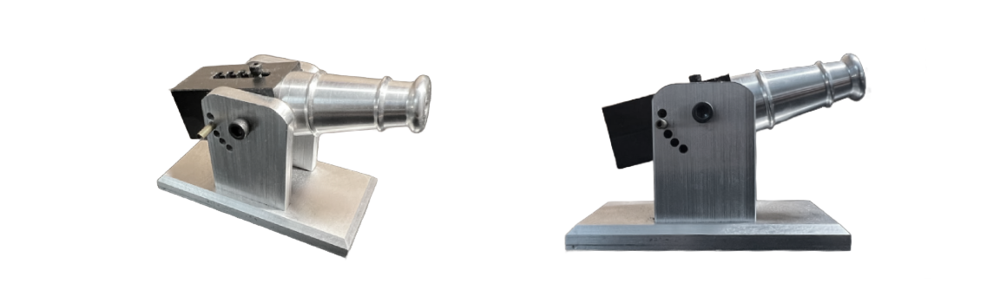

MAE 152 Cannon Project
Project: CNC/Manually Machined Spring-Loaded Cannon
The completion of this project required the culminated expertise with the CNC and manual milling and lathing. Generation of CNC tool paths via Fusion 360 required knowledge of the tool as well as selection of bit size.
Spring housing was fabricated using the CNC mill on a small stock piece of HDPE plastic. The CNC lathe was utilized for shaping the aluminum cannon barrel as well as threading one end for attachment to the spring housing component. The cannon base and uprights leveraged the feed and programming tools on the manual milling machine in order to produce holes along a circular path and chamfer edges. The manual lathe assisted in shaping and threading the 0.365” diameter pin, the component responsible for launching the projectile out of the barrel.